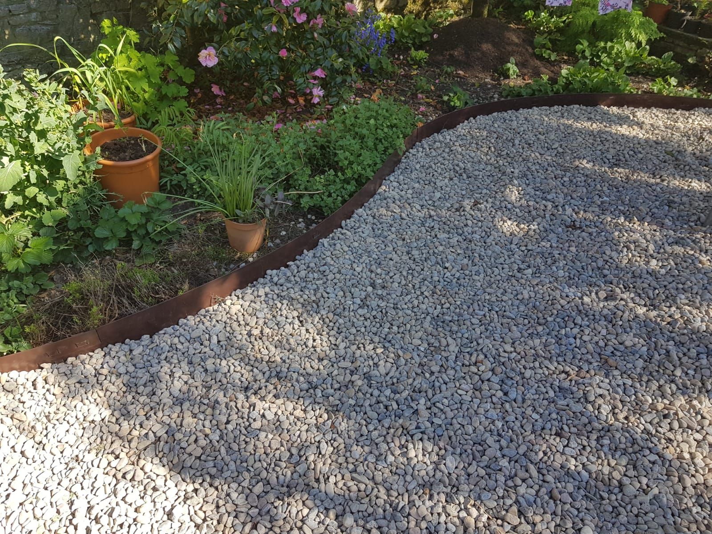
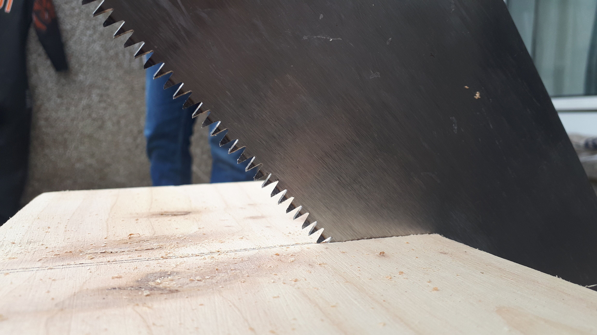
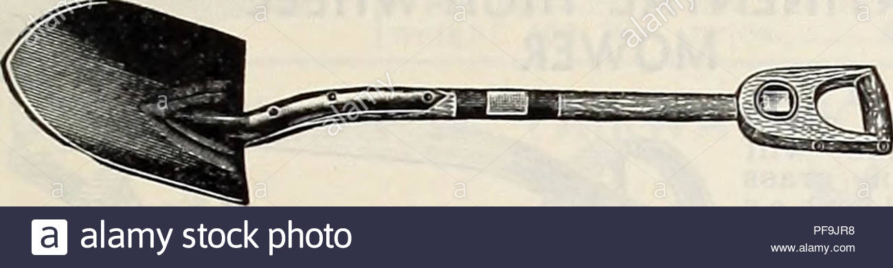

James O'Leary Handyman Services and what we're all about
To some it was becoming an astronaut, to others maybe an engineer, sport star, doctor, web-developer, so many different callings in life for one to choose that a person could spend their whole life trying to find theirs. Yet Ever since James was old enough to bear the weight of a hammer in his hand he knew what he was meant for.Whether it's his knees planted in the soil with mud under his fingernails or slicing and dicing a recently chopped tree into his mind's creation, James's natural state is at work. Unwittingly James has acquired 20 years worth of knowledge in this line of work without even realising he was doing so, not in the hopes of financial gain or for any one specific job, but for the deep satisfaction create something with nothing but his own skills and know-how.JOL services is dedicated to supplying our clients with the best service and attention to detail possible and will treat every garden, project and person as though they are the sole focus of the business.
Standard Options
Small job
Basic maintenance jobs for a garden such as tending to grass/hedges etc.Generally can be done in only a few hours
Medium job
Something more substantial.Generally a job that would take a day or two
Large job
A substantial project that would have to be worked out fully over a lengthy period of time.Maybe fucking several days/fkn weeks maybe
Tree Removal
For those who have a fallen tree in need of removing or for those who simply need their standing trees trimmed and taken care of.
Edging
A simple divide between pathway and soil. This small adition to a garden may not seem like much but it can really make
Wood Working

Unique hand-crafted wood workings that make for gorgeous garden furniture or decoration. Benches, tables, bird-houses, planting beds as well a whole array of other items.
Special requests accepted.
Patio Revival

We can come to clean out any build up of grass or weeds that are protruding through the borders and fill them back in followed by a deep cleaning to have your patio looking good as new.
Strip and Removal
Have an area that's too over-grown? We can come and trim it back down to size and remove the excess ourselves to save you the trip.